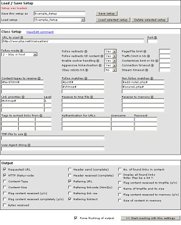

PHPCrawl Testinterface
Since PHPCrawl version 0.7, a visual HTML-testinterface comes along with the package.
It was build to test the crawler, but since the number of settings and methods is growing, the inteface also may be useful to find the right setups for your needs or just to play around with the different settings.

You'll find the test-interface in the directory "test_interface" of the package (file "index.php"). In there you also find a tiny configuration-file called "phpcrawl_testinterface.conf.php".
Before using the test-inerface the first time, you have to choose a username and password for the login (http-auth) and put it into the mentioned configuration-file (variables $cfg_authUsername and $cfg_authPassword).
The interface allows you to quickly setup the crawler-class, choose the output and start the crawling-process with these settings. By clicking the littel info-icons beside the options you get directly to the explanations of the corresponding class-methods in the classreference. Its also possible to save and load different setups.
Please note: The testinterface currently does NOT support all available options and settings from phpcrawl verion 0.8. Also note that the testinterface does NOT support multiprocessing (since multiprocessing only works in CLI-environment)